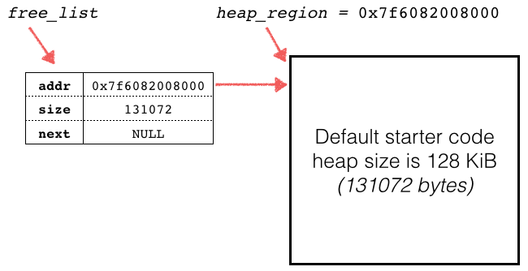
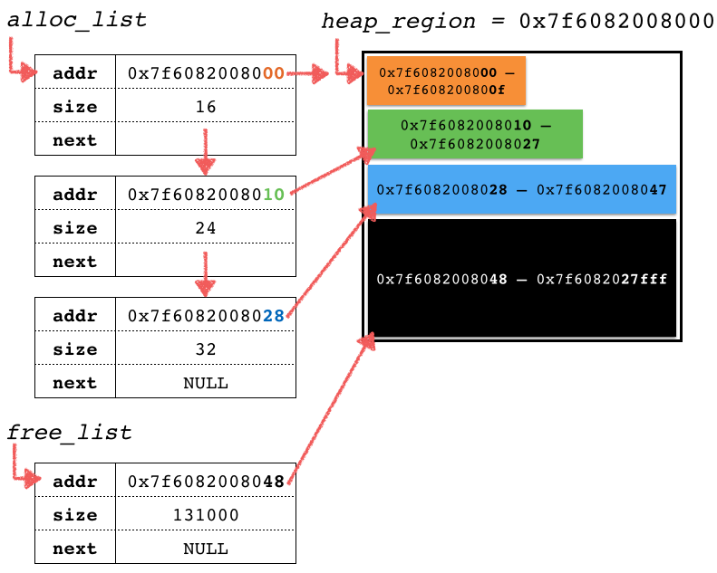
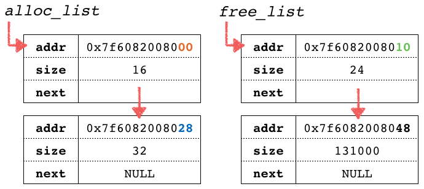

Due Date: Electronically by Wednesday, July 1, at 10:00 pm.
The library functions and system calls that implement dynamic memory allocation
operate on a contiguous region of memory called the heap. Your task is to
implement simple versions of
malloc(3) and
free(3) called
malloc209 and free209. These two functions operate nearly the same way as
malloc and free do: malloc209 makes memory available for use (it
allocates memory) and free209 releases, or frees, that memory back into
the heap pool once you are done with it. One difference between free and your
free209 is that your version will return an integer status code: 0 on
success, and -1 on error (the usual free has a void return type, and thus
does not return a value.)
Before you can start the assignment, you MUST download the starter code and
commit it to your Subversion repository under the a2 directory. You can
access the code by 3 means:
Whichever method you prefer, ensure that you have all 6 files of the starter code.
The starter code provided will compile without warning or error (simply type
make from the shell), but it will not function correctly until you implement
the following features:
void heap209_init(size_t heap_size): (5%) Initialize the memory and metadata that manage the dynamic memory allocation of the heap. Part of this function has been provided for you, using the mmap(2) system call to arrange a large contiguous region of memory for heap storage (see the comments in heap209.c for some further explanation about this interesting system call.) You MUST use the standard library function malloc to allocate and initialize the linked list global variables, which are of type Chunk, a typedef'd struct defined in heap209.h.void heap209_cleanup(void): (10%) Uses the standard library function free to release all the dynamically allocated memory used by the heap metadata (the alloc_list and free_list structures), thus in effect destroying the heap. This function MUST be called prior to program exiting. Valgrind MUST report all heap memory freed, otherwise you have forgotten to free something and thus have a memory leak (see below for details on using Valgrind.)void *malloc209(size_t nbytes): (30%) Reserves nbytes of memory from within the heap region (as initialized by heap209_init.) If the allocation is successfully, a void pointer to the newly reserved memory will be returned. If the allocation fails for any reason (for example, if there is insufficient free space to accomodate the request), NULL shall be returned.int free209(void *addr): (30%) Releases the memory pointed to by addr back to the heap for reuse in fulfilling future allocations. If addr is not the address of any currently allocated chunk of the heap, free209 shall return -1. If it succeeds, it shall return 0.There are three global variables that together represent the heap memory region
and its associated metadata (forward declarations using extern are available
from the
heap209.h
header, and their actual definition is in heap209.c):
heap_region: a void pointer to the starting address of the heap memory region reserved by heap209_init.free_list: a linked list of type Chunk (a typedef'd structure) that delineate the portions of the heap region that are not allocated, and are thus free (available) for use via allocation. Chunks in this list MUST be stored in increasing address order.alloc_list: similar to free_list, but instead of storing unallocated chunks of the heap, this list stores the chunks that were previously allocated through a call to malloc209. Chunks in this list MUST be stored in increasing address order.You can think of the heap_region as a large array of bytes, and it is your
responsibility to partition it up into chunks when malloc209 is called. The
metadata associated with this heap are the two linked list of chunks, those
allocated (currently in use) and those free (unused and thus available for
allocation.) To complete heap209_init, you need to create the first chunk
with address and size associated with the whole heap_region. After
heap209_init completes, the alloc_list should be empty but initialized, and
the free_list should contain one chunk representing the whole heap.
The following diagram shows the state of memory after heap209_init has
initialized the heap region and associated metadata:

When malloc209(nbytes) is called, is searches the free_list for a chunk
that is at least nbytes in size. There are two possibilities if it finds
such a chunk: the chunk might be exactly the required size (size == nbytes),
or the chunk might be larger than required. If the chunk found has a size
that is larger than nbytes, then it will split the block into two. The first,
containing the address and size of the allocated chunk, is placed in the
alloc_list (such that the list remains in order of ascending addresses),
representing the successful allocation that malloc209 has just made. The
second chunk will contain the remaining free (unallocated) memory that was
beyond what was required, and this chunk will stay in the free_list.
Suppose we have a test program that makes the following three calls to
malloc209. The state of the heap metadata is shown below:
void *ptrs[3];
ptrs[0] = malloc209(16);
ptrs[1] = malloc209(24);
ptrs[2] = malloc209(32);

The next diagram shows the state of the metadata data after the following call
to free209:
free209(ptrs[1]);

In addition to completing the four functions to implement the dynamic memory
system, you will also write one test program in
test-CDF_USER.c (where the characters CDF_USER
should be substituted for your actual CDF account username) that tests your
functions. You may use test-basic1.c as a guide for how to write a test, but
your program MUST demonstrate an interesting test case. Determining what
makes an interesting case is a judgement call you need to make, and part of
what we are marking. Your test-CDF_USER.c program
MUST include a comment at the top of the file explaining the scenario that
is under test and why you think it is interesting. Feel free to add additional
diagnostics and sanity checks to the code.
To make test-basic1.c fully functional, you will need to complete the show_list
function in diagnostics.c.
Add a rule (or rules) to the Makefile to properly build an executable called
test-CDF_USER (again, substituting CDF_USER for your
username.)
Add another rule to the Makefile with the target tests and the
prerequisites test-basic1 and test-CDF_USER that runs
both test programs.
Valgrind is an incredibly powerful tool that can automatically detect certain kinds of memory errors and misbehaviours within your programs. For this assignment you are to use it to check and ensure that your program is not leaking any memory (i.e. chunk metadata than you malloc but forget or are unable to later free.)
Run it as follows:
$ valgrind ./test-basic1
The output will include the output from the test-basic1 program itself, as well as a output from Valgrind that will be prefixed with lines like ==33880== (the number, which is the process identifier or pid of the execution of the program, will vary, but the general format will remain the same.) The most useful piece of information from Valgrind will come at the end in the form of a heap summary:
==33880==
==33880== HEAP SUMMARY:
==33880== in use at exit: 0 bytes in 0 blocks
==33880== total heap usage: 6 allocs, 6 frees, 144 bytes allocated
==33880==
==33880== All heap blocks were freed -- no leaks are possible
==33880==
==33880== For counts of detected and suppressed errors, rerun with: -v
==33880== ERROR SUMMARY: 0 errors from 0 contexts (suppressed: 2 from 2)
The critical message that you want to see is All heap blocks were freed -- no
leaks are possible (the suppressed errors are not important.) If your program
inadvertently leaks memory (some pointers returned by malloc are never passed
to free before program termination), you will see a summary that looks
something like the following:
==34248== HEAP SUMMARY:
==34248== in use at exit: 1,000 bytes in 1 blocks
==34248== total heap usage: 7 allocs, 6 frees, 1,144 bytes allocated
==34248==
==34248== LEAK SUMMARY:
==34248== definitely lost: 1,000 bytes in 1 blocks
==34248== indirectly lost: 0 bytes in 0 blocks
==34248== possibly lost: 0 bytes in 0 blocks
==34248== still reachable: 0 bytes in 0 blocks
==34248== suppressed: 0 bytes in 0 blocks
==34248== Rerun with --leak-check=full to see details of leaked memory
Here we are being told that the pointer returned by a malloc(1000) call was
never passed to free before the program terminated, and that the memory was
most certainly lost because the program had no pointers to it that memory
anywhere at all (it was the case that we simply forgot to call free, but that
we would have been unable to even if we had wanted.) Other kinds of memory
leaks will be reported differently, so read the leak summary carefully.
The quality of the code you write is always important. Use clear variable names, consistent and readable formatting, informative comments that are not pedantic, and generally apply good design and human communication principles.
Since what constitutes good design is highly subjective, feel free to solicit advice from the course staff and consider further developing your own aesthetic taste.
You MUST begin this assignment by checking in all of the starter code under
the a2 directory within your repository. This includes all .c source code
files, .h header files and the Makefile.
As you proceed, make sure that you run svn add on every new file you add.
Feel free to include in your repository whatever else you deem worthy.
If you forget to add a file or forget to commit a change, there is nothing that the course staff will be able to do for you.
You should be able to run valgrind ./test-basic1 and see the message All
heap blocks were freed -- no leaks are possible, while also seeing the correct
output from the program itself.
Commit early and commit often (at least every 2-3 hours that you spend working on the assignment.) Consider this as insurance against any last minute SVN problems, or against possibly missing a deadline.
Here is a list of things that you should do on the CDF server at least an hour before the assignment deadline:
make and ensure that at least test-basic1 compiles without warnings or errors../test-basic1, as well as your own test programs, to be sure that everything works as expected.valgrind ./test-basic1, as well as Valgrind on your own test programs, to make sure that no memory is left allocated in the heap at the end of the program run.Remember that your submission MUST compile and run correctly on CDF, without exception.